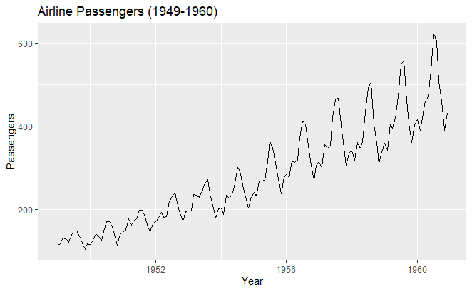
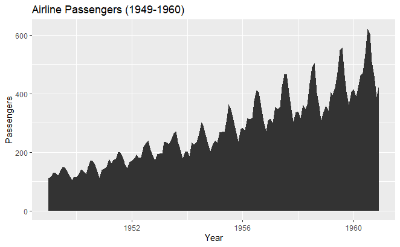
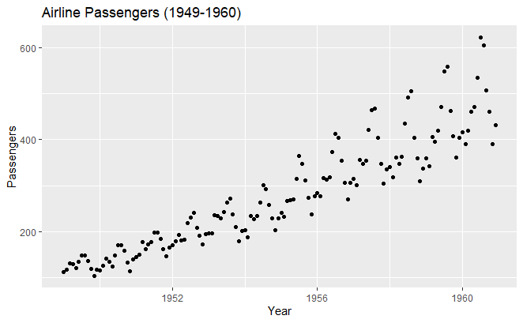
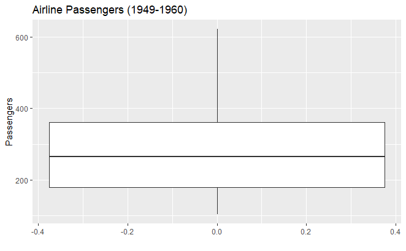
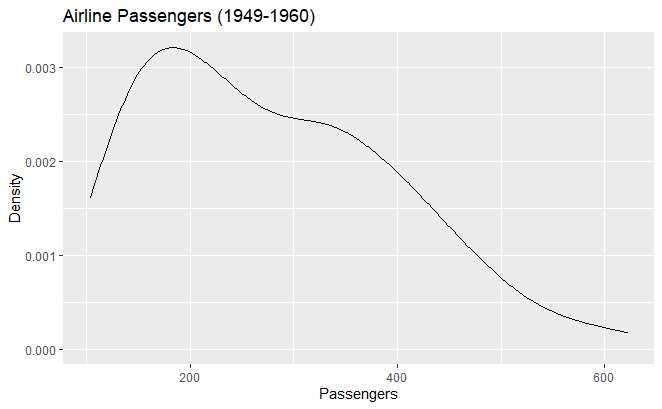
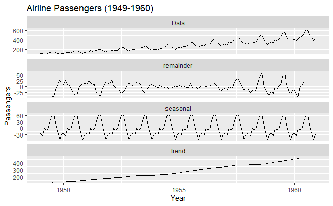
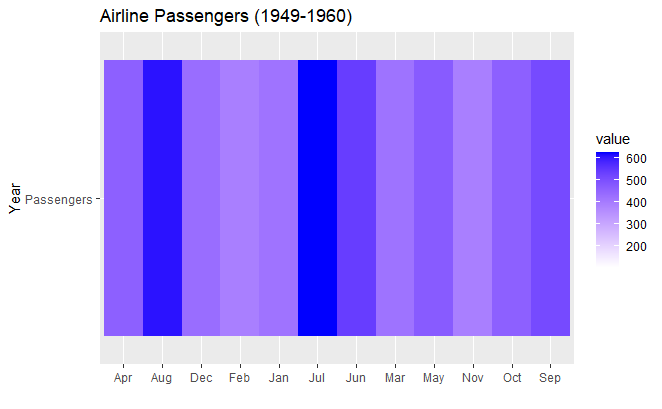

Ris used everywhere espically in Data Science. As Part of our Data Visualization and Communication Course, our mentor Dr.Prashobhan Palakkeel has given an assignment to do data Visualization of timeseries data. I have used most popular data Visualization plots. I have included the R code that I have used for Visualization and the outputs.
I have tried to visualize the AirPassengers dataset from R using different plots.
data(AirPassengers)
passengers <- ts(AirPassengers, start = c(1949, 1), end = c(1960, 12), frequency = 12)
Let's create some visualizations of this time series using different popular graphs and plots. We'll use the ggplot2 package for creating the visualizations.
library(ggplot2)
# Line chart
ggplot(data = data.frame(time = time(passengers), passengers = passengers), aes(x = time, y = passengers)) +
geom_line() +
labs(title = "Airline Passengers (1949-1960)", x = "Year", y = "Passengers")Line Graph
# Area chart
ggplot(data = data.frame(time = time(passengers), passengers = passengers), aes(x = time, y = passengers)) +
geom_area() +
labs(title = "Airline Passengers (1949-1960)", x = "Year", y = "Passengers")Area Graph
# Scatter plot
ggplot(data = data.frame(time = time(passengers), passengers = passengers), aes(x = time, y = passengers)) +
geom_point() +
labs(title = "Airline Passengers (1949-1960)", x = "Year", y = "Passengers")Scatter Plot
# Box plot
ggplot(data = data.frame(passengers = passengers), aes(y = passengers)) +
geom_boxplot() +
labs(title = "Airline Passengers (1949-1960)", x = "", y = "Passengers")Boxplot
# Density plot
ggplot(data = data.frame(passengers = passengers), aes(x = passengers)) +
geom_density() +
labs(title = "Airline Passengers (1949-1960)", x = "Passengers", y = "Density")Density Graph
# Decomposition plot
library(ggfortify)
autoplot(decompose(passengers)) +
labs(title = "Airline Passengers (1949-1960)", x = "Year", y = "Passengers")
Decomposition of time series data
# Heatmap
library(ggplot2)
library(reshape2)
passengers_df <- as.data.frame(as.matrix(passengers))
colnames(passengers_df) <- "Passengers"
passengers_df$Month <- month.abb[1:12]
passengers_melt <- melt(passengers_df, id.vars = "Month")
ggplot(passengers_melt, aes(x = Month, y = variable, fill = value)) +
geom_tile() +
scale_fill_gradient(low = "white", high = "blue") +
labs(title = "Airline Passengers (1949-1960)", x = "", y = "Year")Heat Map
